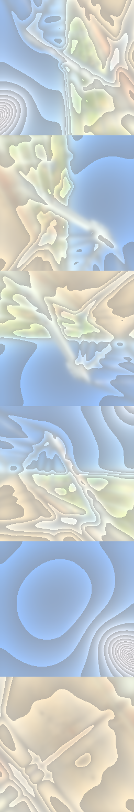

I tested on Sphereflakes.s72 with normal and displacement mapping, but found no noticable difference.
Not sure how to load test this exactly..
I tested on Sphereflakes.s72 with normal and displacement mapping, but found no noticable difference.
Not sure how to load test this exactly..
Noire Engine 2's material system is quite straightforward: ObjectPipeline holds all the possible material workflows (Environment, Mirror, PBR, Lambertian),
and manages their pipelines as well. A MaterialPipeline binds only the neccesary descriptor sets, and the object pipeline renders the workflows sequentially, binding the respective
pipeline each time. Thus, a single material pipeline is only binded once every frame. Individual materials hold a CreateInfo information as they are deserialized, but developers can edit
the material instance's attributes as runtime inside the Editor.
Noire Engine 2 features a IBL + PBR material workflow with parallax occlusion mapping. Supporting up to 20 analytical realtime lights of either
Directional, Spot, or Point. Developers can load environment maps as RGB or HDR(RGBE), and the engine will convert them at initialization. The engine also provides a cubemap utility for baking analytical lambertian irradiance map,
analytical prefiltered environment ggx-roughness map, and importance sampled environmental BRDF on the GPU as compute shaders.
On top of A1, the Editor now supports a variety of debugging gizmos, including the default G, R, S binding similar to Blender, AABB bounds, and support for spot/point light gizmos. No finger picking is implemented sadly.
As always, you can view the complete Github Repo here:
Noire Engine 2
A brick
I baked the albedo, height, metallic, and normal maps in Adobe Substance painter. Mesh wise, its just a cube lol.
See EnvironmentMaterial and EnvironmentMaterialPipeline. Naming is similar for all materials.
Environment material is quite simple, I just load a cubemap (in RGB32_SFLOAT for HDR, RGB8_UNORM for RGB) in scene and sample it in the fragment shader.
Coordinate system is cubemap..? You can see shaders/glsl/cubemap.glsl for converting between cubemap UV and cartesian coords.
HDR environment maps, once loaded by the engine, is converted into RGB in a pixel-by-pixel process on the CPU (no time for compute :( ).
Environment and Mirror materials
I chose the ACES tone mapping, since it is commonly used for filmic effects. This is the one I use in production to make games as well. I also tried out Uncharted2's tone mapping, not sure how I feel about it tho. My viewer's fragment color space is always gamma corrected with gamma=2.2.
No Tone Mapping: ACES: Uncharted2:
ACES tone mapping curve:
The lambertian material samples irradiance from the environmental cubemap.
renderer/utils/LambertianEnvironmentBaker.* Dispatches a compute shader and waits for it to finish. After that, writes all 6 faces to PNG.
The compute shader runs on all pixels of the output image, and integrates analytically.
Unit Cube with no analytical lights:
RGB Skybox: Skybox Lambertian Irradiance:
I passed the tangent from vertex to frag shader (after multiplying it by the model matrix and the bitangent sign). All the TBN is handled in the frag shader (cuz i couldn't get it to work when I did it in vertex shader sadge). In the frag shader, we sample from the normal texture, remap it, multiply it by the TBN matrix, and multiply its xy coords by a normal strength. Finally it is normalized. In parallax occusion mapping, we use the skewed UV to sample from the normal map.
Ah. sorry for the music.
See shaders/compute/ggx/* For a list of compute shaders for different mip levels. I tried to push constant and synchronize different calls and dispatch one after the other, but
I couldn't do it. So here it is -- 6 compute shaders, each defines a MIP_LEVEL constant lol. Anyways in the application you just dispatch 6 pipelines.
Specular map is analytically integrated and multiplied by the GGX normal distribution function and cosine theta.
Mip 1:  Mip 2: Mip 3: Mip 4: Mip 5:
Note: this is actually slightly different (an extra patch here and there) from what you guys had as the ox_bridge_morning env map. Can you guys take a look at the shader and lmk if I'm doing things correctly?
Parallax occlusion mapping is done on the tangent space. See shaders/glsl/parallax.glsl
CPU: Intel 07-12700K 3.60 GHz
GPU: NVIDIA GeForce RTX 3070 Ti
Memory: 32.0GB DDR5
OS Version: Windows 11
Benchmark Monitor Resolution: 1920x1080
Mip 5:
I tested on Sphereflakes.s72 with normal and displacement mapping, but found no noticable difference.
Not sure how to load test this exactly..
Didn't have time to test this part.
A2 kinda hard man